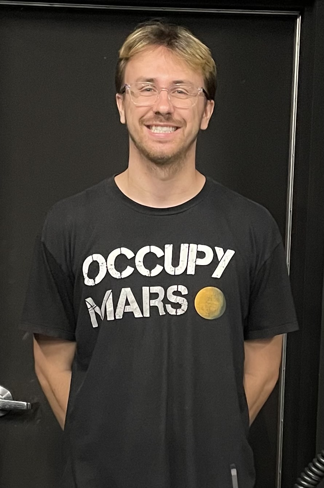

About Me
I enjoy learning how things work.
I am using this website to showcase some of my projects and interests but mainly as an excuse to learn HTML and CSS (so if this website looks bad on your computer, I'm probably working on fixing it)
I received my B.S. in Aerospace Engineering from Florida Institute of Technology in May 2022. I am currently a graduate student at Florida Tech studying Aerospace Engineering graduating in July 2023. My primary interests are in the field of aerospace, robotics and controls (hence the background image) but I frequently find my self falling down rabbit holes of various engineering topics from computer architecture and radio frequency communications to rocket propulsion and heat transfer to name a few.